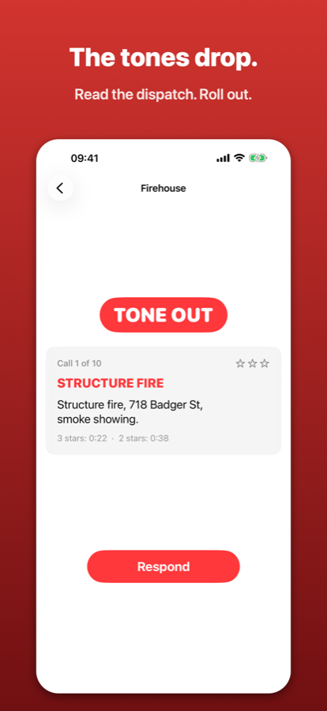
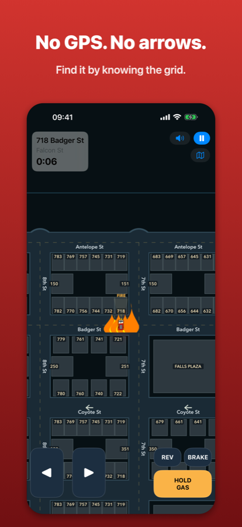
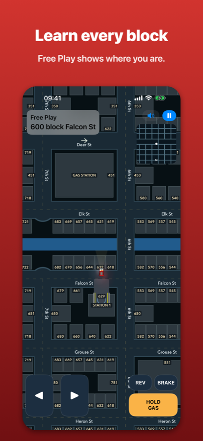

Made by a real firefighter
On the job, a lot of us are expected to know our first-due area well enough to respond without a map: read the address, picture the block, and go. I built a much bigger app to study my own response area. Tone Out is a small, light version of that idea, set in a made-up town so anyone can try it.
A lot of departments work the same way. You have to study your area, and once you've learned one grid, the next one comes easier.
Learn the grid
Numbered streets run north–south. Animal-named streets run east–west in ABC order: Antelope, Badger, Coyote…
718 Badger St is always between 7th and 8th St. On a numbered street, the hundreds count the animals: 351 3rd St is between Coyote (C, the 3rd letter) and Deer.
Odd numbers are on the north and east sides. Even numbers are on the south and west sides.
What's inside
- Alert tones, a dispatch card, the bay door, and you're rolling.
- 30 calls across Kettle Falls: house fires, school alarms, a nursing home, a warehouse, car fires and more.
- Up to 3 stars per call. Curb hits and wrong-way driving cost you time.
- Free Play: drive anywhere with a live block readout and an optional map.
- An original soundtrack.
No accounts. No ads. No tracking.
One purchase. Nothing leaves your phone. Privacy details.
Tone Out is a game. Kettle Falls is fictional. Don't use it for real driving or navigation.